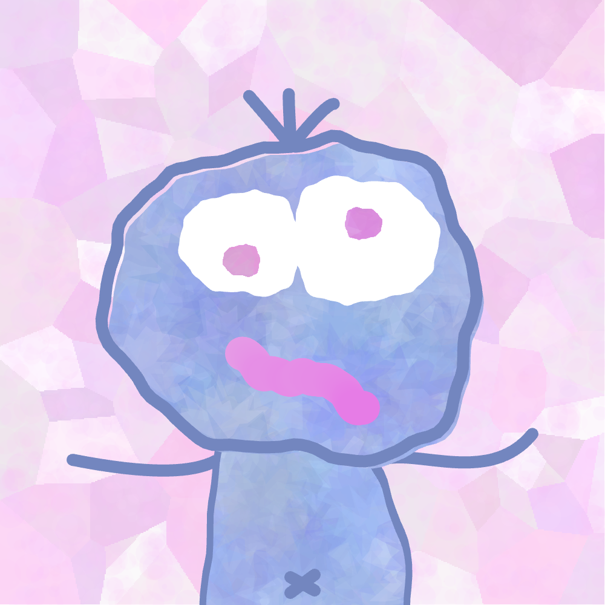

McToady: EVM Security Researcher

About Toad
Toad is an EVM smart contract security researcher, occasional smart contract developer, sometimes teacher of things, CTF enjoyoor and once in a blue moon generative art hobbyist. Toad is avaiable for private audits, collaborations, consultancy, emotional support and probably lots of other things too. Get in touch via the links at the bottom of the page if any of those things sound like things you desire.
Toad's Project History
- Completed multiple private security reviews and took part in competitive audit contests, overview here.
- Built Ethernaut Foundry, which allows completing the Ethernaut CTF from within a foundry repository.
- Built Buidl DeFi Primitives when working with the BuidlGuidl, a foundry repo of easy to understand implementations of common DeFi contracts (ERC4626 Vaults, prediction markets, lending/borrowing, etc).
- Participated in multiple EVM CTFs (Paradigm CTF 2023 #103, Curta Cup 2023 #42).
- Contributor to the smol-evm, a simple python EVM imlpementation.
- Built multiple onchain generative art NFT collections as part of Circolors.
Toad's Socials